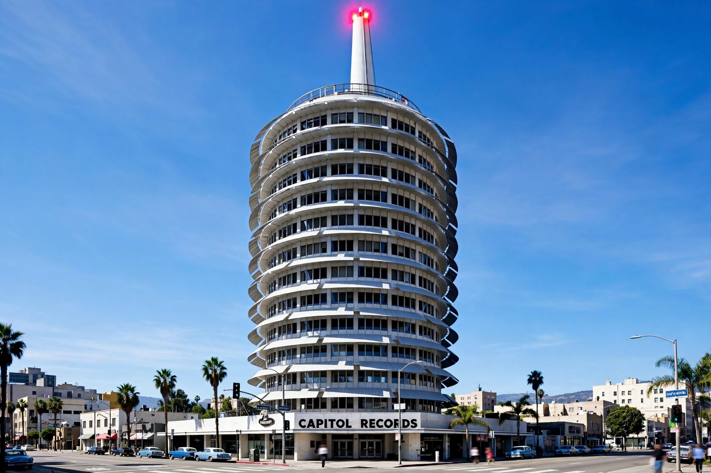

| Capitol Records Building | |
|---|---|
| Address | 1750 Vine Street, Hollywood, Los Angeles, California |
| Completed | 1956 |
| Architect | Louis Naidorf (Welton Becket and Associates) |
| Height | 150 ft (46 m), 13 stories |
| Designation | Los Angeles Historic-Cultural Monument No. 857 |
The Capitol Records Building, also known as the Capitol Records Tower, is a 13-story tower building in Hollywood, California, located just north of the Hollywood and Vine intersection. The building, designed to resemble a stack of phonograph records, is one of the city's landmarks and contains the Capitol Studios.
British company EMI, Capitol's parent, commissioned the building after acquiring the label in 1955. Architect Louis Naidorf of Welton Becket and Associates designed the world's first circular office building; the resemblance to a stack of vinyl records on a turntable, topped by a spindle-like spire, is said to be a happy coincidence of the efficient round plan, though the design is universally read as a record stack. Construction finished in 1956.
The ground-floor Capitol Studios, including the famous Studios A and B and underground echo chambers designed by Les Paul, have hosted Frank Sinatra, Nat King Cole, the Beach Boys, and many others. The red light atop the spire blinks "H O L L Y W O O D" in Morse code — a signal switched on by Leila Morse, granddaughter of Samuel Morse. The building was designated a Los Angeles Historic-Cultural Monument in 2006, and Capitol Records remains part of Universal Music Group.